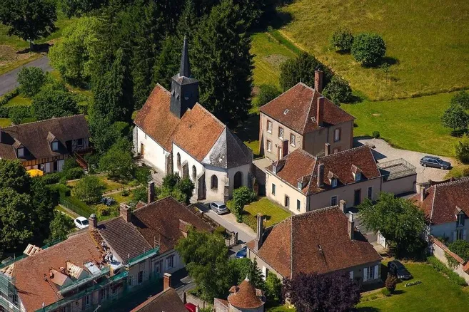
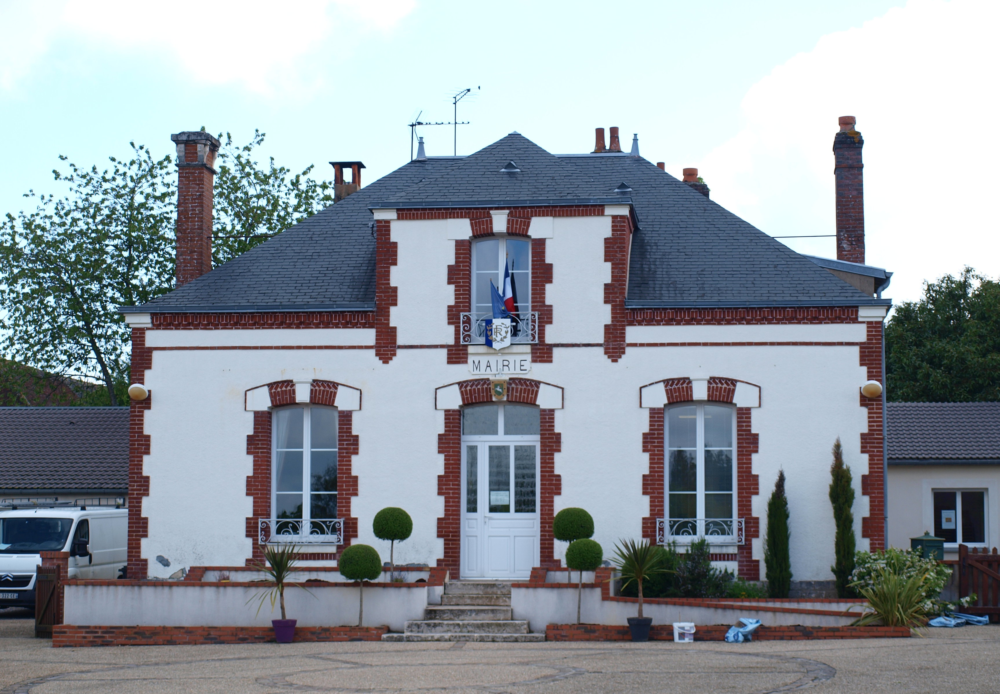
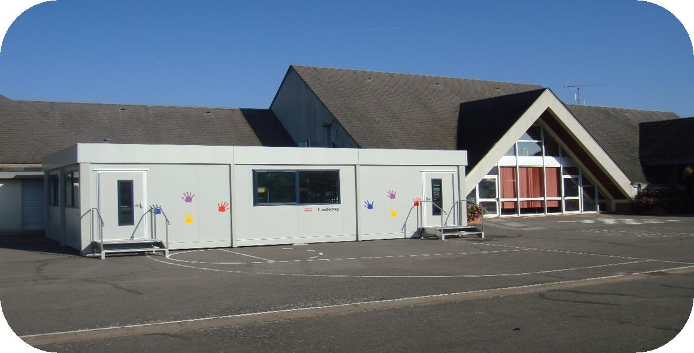
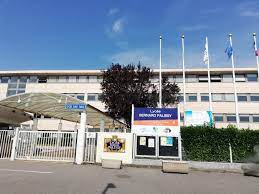
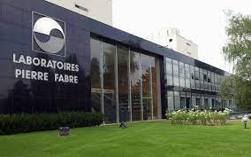
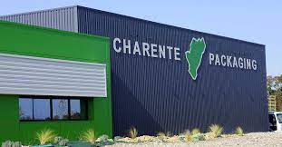
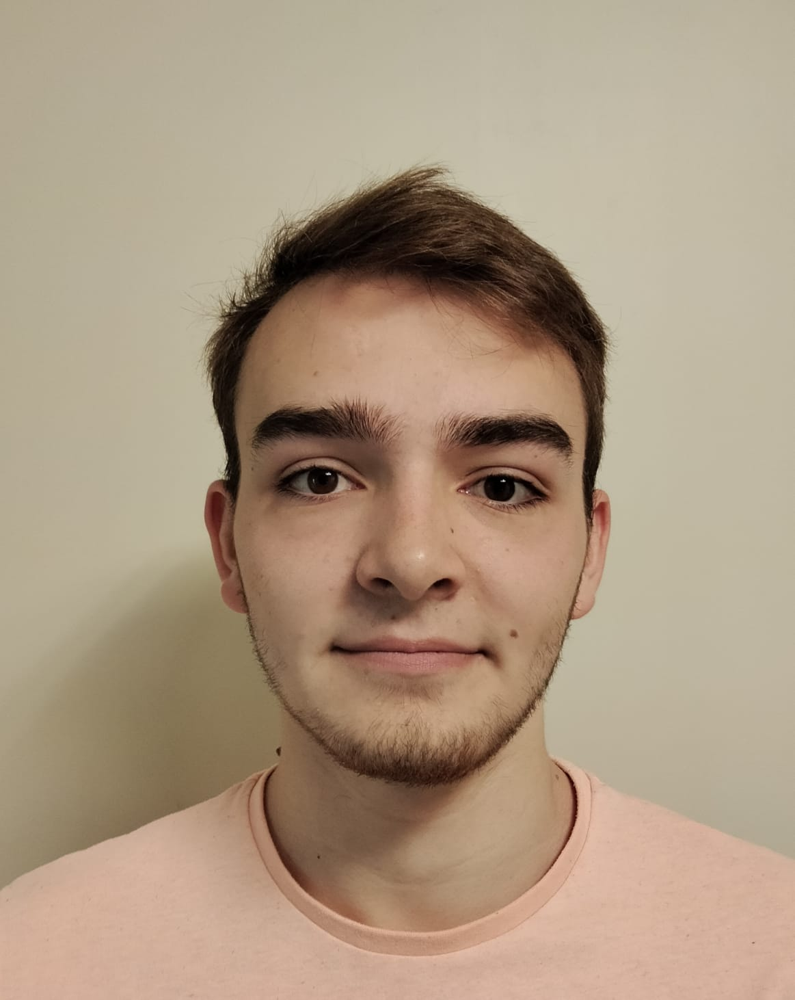
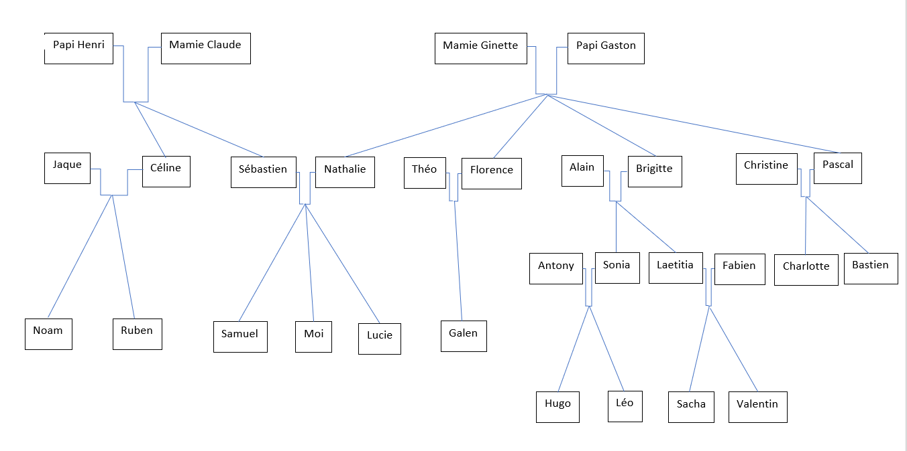

Ma scolarité
Mon école primaire
Mon collège
Mon lycée
Mon IUT
Mes experiences
Mon stage de 3ème
Mon travail de l'été 2022
Moi
Profil
Ma famille
Contactez-moi
Ma ville : Boismorand



Durant mon enfance je suis allé à l'école primaire situé a Poilly-lez-Gien, mon père y travaillait en temps que professeur. J'ai fait là-bas mon cursus maternelle et primaire. Elle se situe: rue du 11 novembre 45500 Poilly-lez-Gien, cette école a été créée en 1967. Dans cette école, nous avons fait de nombreuses choses qui m’ont marqué comme les carnavals, les kermesses et les classes de neiges.
A l'âge de 11ans, je suis allé au collège Ernest Bildstein. J'ai beaucoup aimé cette période car j’y ai rencontré mes amis actuels. Ce collège a été créé en 1977 à Gien et ma sœur y étudie actuellement. J’ai passé dans ce collège 4 ans de ma 6ème à ma 3ème. La plupart du temps j'aimais le passer à être à l’AS (association sportive).

Je suis allé au lycée Bernard Palissy de ma seconde à ma Terminale. C’est dans ce lycée que j’ai obtenu mon Bac mention BIEN. Durant cette période, j’ai fait partis de la MDL (maison des lycéens). J’ai pu m'investire dans des projets et cela m’a énormément apporté. Je passais aussi beaucoup de temps dans le gymnase à faire du sport avec mes amis.
Actuellement, je suis à l’IUT de Colmar dans la filière Réseau et Télécommunication en 1ère année de BUT. Cette formation me plait énormément. J’apprend beaucoup de choses très intéressantes. Par exemple, comment crée un site web comme le site que je suis entrain de crée pour cette SAE. Au début je ne connaissais personne je me suis très vite fait des amis.

Concernant mes expériences, j’ai fait un stage de 3ème au laboratoire pharmaceutique PIERRE FABRE, j’ai découvert beaucoup de métier et j’ai surtout pu suivre un technicien en informatique et cela m’a tout de suite marqué, j’ai pu dès ce moment commencé à travaillé sur le réseau en m’informant sur internet.

Lors de mon été 2022 j’ai décidé de travailler, j’ai donc pu trouver cette usine de Cognac grâce à des relations. Cette expérience de travail m’a fait comprendre que le travail manuel à la chaine n’était clairement pas fait pour moi.

Je m’appelle Nathan PIGEYRE.
J’ai 18 ans.
Je suis en formation BUT Réseau et Télécommunications à Colmar.
Je suis une personne très motivé, curieux et rigoureux.
Je préfère travailler en équipe car j'ai un bon relationnelle et pour que le travail soit plus efficace.
J’ai obtenu le Bac avec la mention BIEN en 2022.
J’aime beaucoup faire du sporttel que le badminton, le handball, le basket.
Mon Arbre Généalogique

Numéro à contacter : 07 83 97 72 76
Adresse uha : nathan.pigeyre@uha.fr